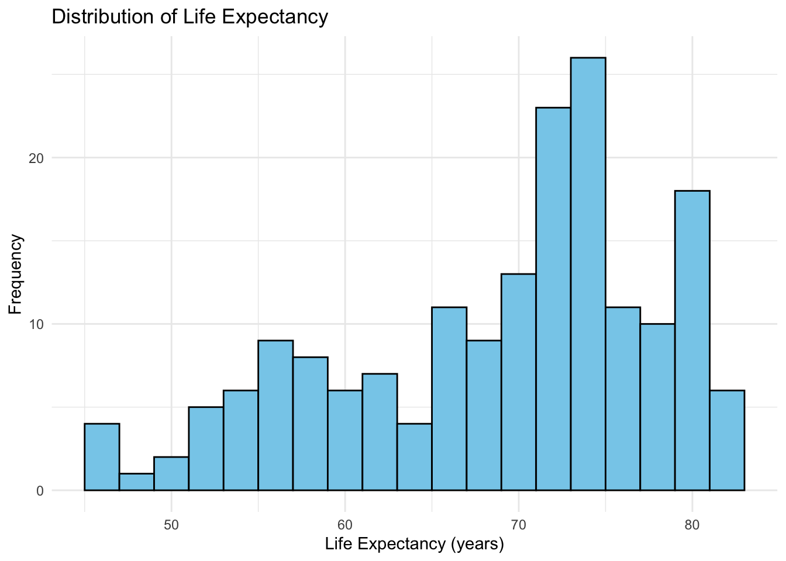
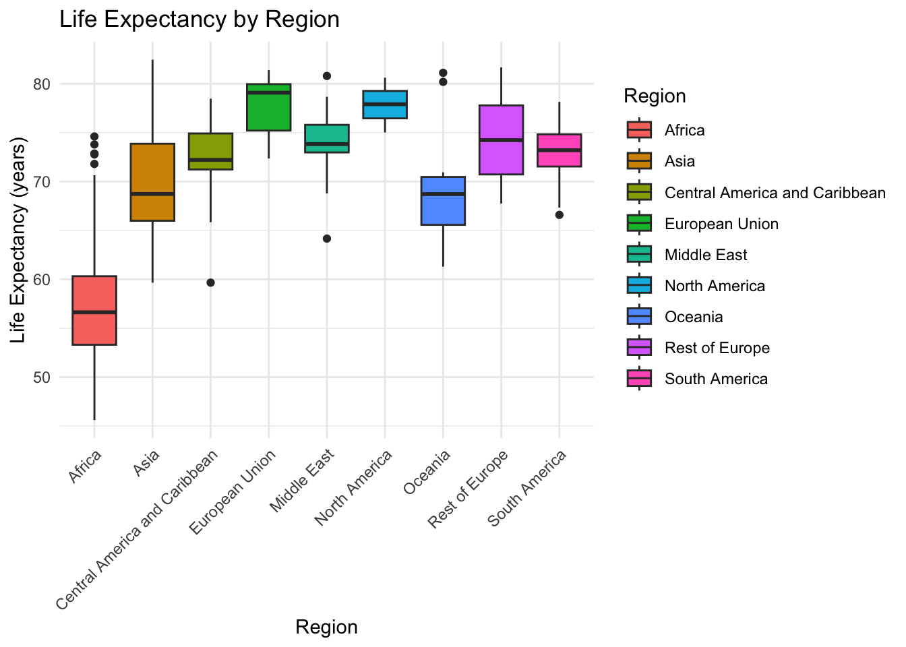
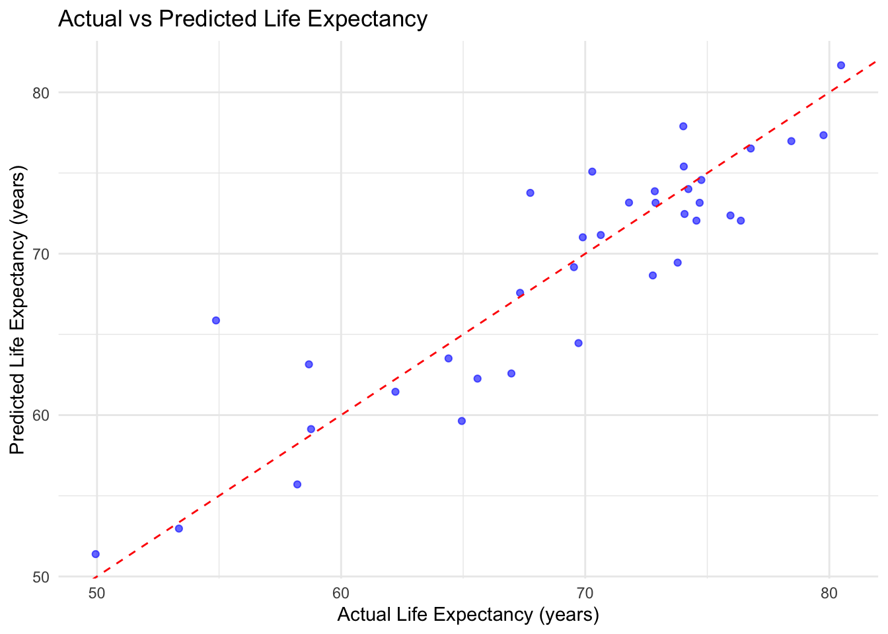

This analysis explores the Life Expectancy Averaged Dataset, highlighting global trends in life expectancy and the impact of socio-economic and health factors. The dataset contains life expectancy data across countries and regions, along with associated indicators like GDP, education levels, and infant mortality. This analysis leverages visualizations and predictive modeling to identify key drivers of life expectancy.
Dataset Source The dataset used in this analysis is available on Kaggle:https://www.kaggle.com/datasets/shreyasg23/life-expectancy-averaged-dataset
library(ggplot2)library(dplyr)
Attaching package: 'dplyr'
The following objects are masked from 'package:stats':
filter, lag
The following objects are masked from 'package:base':
intersect, setdiff, setequal, union
The histogram shows the global distribution of life expectancy. Most countries have a life expectancy between 60 and 80 years, with a small number of outliers on both ends. This reflects disparities between developed and developing nations, where factors like healthcare access and socio-economic status play a significant role.
# Life expectancy histogramggplot(dataset, aes(x = Life_expectancy)) +geom_histogram(binwidth =2, fill ="skyblue", color ="black") +theme_minimal() +labs(title ="Distribution of Life Expectancy",x ="Life Expectancy (years)",y ="Frequency" )

he boxplot highlights regional differences in life expectancy:
Africa has the lowest median life expectancy, likely due to higher disease prevalence, lower immunization rates, and economic challenges. Europe, North America, and Oceania exhibit the highest life expectancy, supported by robust healthcare systems and higher GDP. Asia and South America show moderate life expectancy with notable variation across countries.
# Life expectancy by region (boxplot)ggplot(dataset, aes(x = Region, y = Life_expectancy, fill = Region)) +geom_boxplot() +theme_minimal() +theme(axis.text.x =element_text(angle =45, hjust =1)) +labs(title ="Life Expectancy by Region",x ="Region",y ="Life Expectancy (years)" )

###Predictive Modeling
Objective
Develop a linear regression model to predict life expectancy based on key indicators:
GDP_per_capita: Represents economic prosperity.
Schooling: Average years of education, reflecting access to knowledge.
Infant_deaths: A critical health indicator, inversely correlated with life expectancy.
The Adjusted R-squared of 0.8725 indicates that the model explains ~87% of the variance in life expectancy.
The p-value (< 2.2e-16) confirms the model’s statistical significance.
Key Findings:
GDP_per_capita: Positively correlated with life expectancy. A higher GDP indicates better access to healthcare and improved living standards.
Schooling: Negatively correlated, though marginally significant (p = 0.0481). This counterintuitive result may reflect collinearity with other predictors.
Infant_deaths: Strong negative correlation, highlighting its critical impact on life expectancy.
This low RMSE reflects accurate predictions of life expectancy across countries.
###Actual vs Predicted Life Expectancy
The scatter plot below shows predicted vs actual life expectancy. The points cluster closely around the diagonal line, demonstrating the model’s effectiveness.
ggplot(test_set, aes(x = Life_expectancy, y = Predicted_Life_Expectancy)) +geom_point(color ="blue", alpha =0.6) +geom_abline(intercept =0, slope =1, linetype ="dashed", color ="red") +theme_minimal() +labs(title ="Actual vs Predicted Life Expectancy",x ="Actual Life Expectancy (years)",y ="Predicted Life Expectancy (years)" )

###Conclusion
The analysis highlights that GDP_per_capita and Infant_deaths are the strongest predictors of life expectancy. Countries with higher GDP per capita typically enjoy better access to healthcare and improved living standards, which directly contribute to longer life spans. Conversely, high infant mortality rates have a significant negative impact on life expectancy, emphasizing the need for targeted interventions to improve maternal and child healthcare. The role of Schooling, however, requires further investigation. While it showed a marginally significant negative correlation in this model, this result could stem from multicollinearity or complex interactions with other predictors.
Life expectancy varies widely across regions, with Africa exhibiting the lowest averages. This disparity underscores the critical need for policies that enhance healthcare access, reduce disease burden, and improve education in under-resourced areas. In contrast, developed regions such as North America, Europe, and Oceania report consistently higher life expectancy. These findings reflect the impact of robust healthcare systems, higher economic stability, and well-developed social infrastructure in sustaining healthier populations.